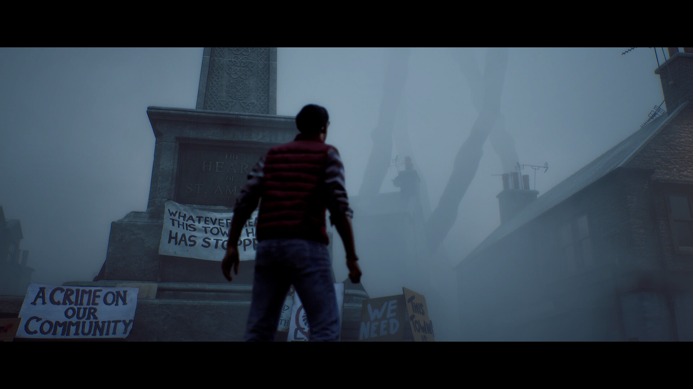
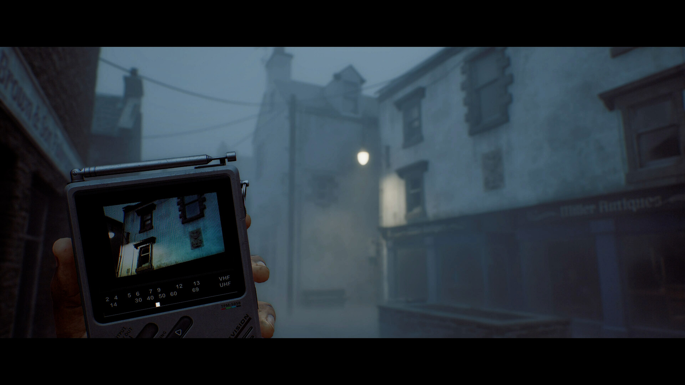

La niebla, la radio y el televisor: Silent Hill y el miedo a lo que no se ve
En 1999, la niebla de Silent Hill escondía lo que la PlayStation no podía dibujar. En 2026, Townfall pone en tus manos un televisor portátil para ver a través de las paredes. En medio hay 27 años de una misma idea: el miedo está en la información que te falta.

Apertura: el pueblo que no termina
00:00Plano: calle de Silent Hill (1999) en niebla, sin interfaz. Solo viento.
Hay una calle. Unos metros más allá, la calle desaparece. No hay una pared ni un precipicio: hay un gris que se mueve. Caminas y el gris se aparta lo justo para mostrarte un poste, una puerta o un coche abandonado, y después vuelve a cerrarse detrás de ti.
Silent Hill es famoso por esa niebla. Lo que no todo el mundo sabe es que la niebla no nació como una idea artística. Nació como una solución técnica.
1999: una limitación convertida en estilo
00:45Plano: logo de Konami y de PlayStation. Texto en pantalla: «Silent Hill · Team Silent · 1999».
Silent Hill salió en febrero de 1999 para la primera PlayStation. Lo hizo Team Silent, un grupo de Konami dirigido por Keiichiro Toyama, con Akira Yamaoka en el sonido. A diferencia de Resident Evil, que usaba fondos prerenderizados, Silent Hill construyó un pueblo entero en 3D en tiempo real. Para una consola de 1994, eso era pedir demasiado.
El problema se llama distancia de dibujado. La consola no podía mostrar todo el pueblo a la vez, así que los edificios lejanos tenían que aparecer de golpe a medida que el jugador se acercaba, el famoso pop-in. Para esconderlo, el equipo llenó las calles de niebla y, en las zonas interiores, de oscuridad. Lo que no se podía dibujar, simplemente no se veía.
Plano: comparación lado a lado de Silent Hill con un juego de mundo abierto de la época con pop-in visible.
La revista británica Edge lo resumió así: mientras otros juegos intentaban disimular las limitaciones de la PlayStation, Konami usó esa falta de distancia de dibujado para dar escalofríos, envolviendo todo en una niebla atmosférica. El parche se convirtió en la identidad de la saga.
La niebla no ocultaba el juego. Era el juego.
La radio: oír antes de ver
02:30Plano: Harry Mason camina con la linterna encendida; la radio empieza a soltar estática.
Si no puedes ver lejos, necesitas otra forma de saber qué viene. Silent Hill te da una radio de bolsillo que emite estática cuando hay criaturas cerca. Es un aviso, pero no te dice dónde está el monstruo, cuántos hay ni qué son. Solo te dice que algo se acerca.
La linterna funciona igual. Ilumina un cono pequeño delante de ti y, si la apagas, los enemigos te detectan con más dificultad. Ver más significa ser más visible. El juego convierte la información en un recurso que se paga con riesgo.
Plano: pantalla negra con solo el sonido de la estática durante tres segundos.
Ahí está la idea central de la saga: el sonido llega antes que la imagen. El miedo no lo provoca el monstruo que ves, sino los segundos en los que sabes que está y no lo ves.
Quitar la niebla
04:00Plano: remake de Silent Hill 2 (Bloober Team, 2024) con niebla; después, la misma calle con un mod que la elimina.
Veinticinco años después, el hardware ya no necesita la niebla. El remake de Silent Hill 2 podría mostrar el pueblo entero, pero decidió mantenerla. Y la reacción de los jugadores dice mucho: en PC aparecieron mods para quitar la niebla y liberar la cámara, y con ellos se descubrieron detalles del escenario que nadie debía ver.
Sin niebla, el pueblo es más pequeño. Las calles terminan, los decorados se notan y el misterio se convierte en un mapa. La prueba es casi un experimento: si al quitar la limitación desaparece el miedo, la limitación nunca fue el problema.
2026: el televisor de Townfall
05:30Plano: Simon Ordell sostiene un televisor CRT portátil en una calle con niebla de St. Amelia.

Silent Hill: Townfall, de Screen Burn, salió en septiembre y deja el pueblo de siempre por St. Amelia, una isla escocesa ficticia en 1996. Cambia a primera persona y sustituye la radio por un televisor CRT portátil que detecta enemigos a través de las paredes.
Parece lo contrario de la niebla: un aparato que te deja ver lo que está escondido. Pero se ve en blanco y negro, con baja resolución y en una pantalla diminuta. Mientras miras el televisor, no miras el pasillo. Es la linterna de 1999 llevada más lejos: cada dato que consigues lo pagas con atención.
Plano: la pantalla del CRT a pantalla completa, con interferencias.
La crítica ha comparado el sigilo de Townfall con Alien: Isolation, y no todos creen que funcione igual de bien. Pero la idea es puro Silent Hill: no te quita la información, te la da incompleta y en el peor momento.
Cierre
07:15Plano: vuelta a la calle de 1999. La niebla se cierra. Corte a negro.
De la niebla a la radio y de la radio al televisor, Silent Hill lleva casi tres décadas diseñando lo mismo: el hueco entre lo que sabes y lo que ves. La tecnología ya no obliga a esconder nada. La saga sigue escondiéndolo porque descubrió, por accidente, que el miedo vive en lo que falta.
08:00Créditos y fuentes en pantalla.
Fuentes
- Wikipedia — Silent Hill (1999): desarrollo, uso de la niebla y la oscuridad, y la cita de Edge
- PC Gamer — Jugadores quitan la niebla del remake de Silent Hill 2 con mods
- Steam — Silent Hill: Townfall
- Qué dijo la crítica en septiembre: recepción de Townfall